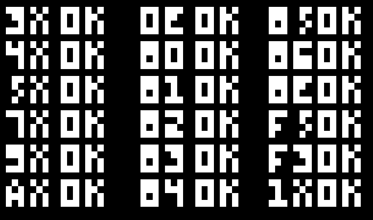

Exceptional service is achievable because exceptional service is architected from systems and processes that you control.
- Disney
Projects
DistanSing
A peer-to-peer audio application for musicians to practice and perform together while social distancing.
Chip8 Emulator
An almost fully featured chip8 emulator written in C++.
DFMA Viewer
This is a viewer for FDF-MAP files in reference to the Dwarf Fortress Map Archive. (https://mkv25.net/dfma/). The archive is a forum for sharing interesting maps for Dwarf Fortress. It a map viewer that currently runs on flash which is now obsolute.
My viewer is made with P5.js and HTML5 canvas.
If you want to learn more about the best game ever made Dwarf Fortress, visit Bay12Games.
Raycasted Maze Generator
This was the final project for my CS 4150 (Web Software Architecture) class at the University of Utah, Fall 2019.
It is a raycasted pseudo-3d maze generator.